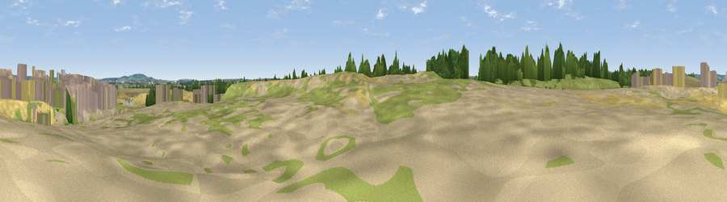

Viewpoint near North Ockendon
#29312 in England · top 10% of its area beats it · near North Ockendon · access?Where it is
The exact computed spot (TQ 60475 83525). Click the marker for map links.
Public access: no public right of way or access land is recorded at this exact spot — it may be on private land. Computed from Natural England's CRoW access layer and OpenStreetMap rights of way — not the legal definitive map. Always verify locally.
The view, rendered

A 360° render of this exact spot computed from the terrain model, tree cover and land cover — summer colours, afternoon light, calibrated against photographs of famous viewpoints. Real trees, hedges and buildings will differ in detail.
The panorama
Grey silhouette: terrain skyline in each direction (720 bearings, Earth curvature and refraction included). Dashed green: skyline with trees (+15 m) and buildings (+8 m) as obstacles. Blue strip: how far the ground is visible on each bearing.
Where the view opens
Wedge length = distance to the farthest visible ground on that bearing (vegetation-aware). Rings at 10, 25 and 50 km.
What fills the view
47% cropland · 27% grassland · 10% bare ground · 10% woodland · 5% built-up ·
Angular shares of the visible panorama (visual magnitude), not map area. Landscape diversity 0.59 (0–1 Shannon).
Key numbers
More beautiful places nearby
The staircase of upgrades: each row has a higher view potential than everything closer. Driving times are estimates from straight-line distance, calibrated against real road routing — check an actual route before setting out.
| Place | Direction | Drive | Score |
|---|---|---|---|
| Jury Hill | NNE · 6 km | ~13 min | 48.5 |
| Viewpoint near Horndon On The Hill | ENE · 7 km | ~15 min | 51.8 |
| Viewpoint near Vange | ENE · 12 km | ~22 min | 58.2 |
| Viewpoint near South Benfleet | E · 18 km | ~32 min | 59.8 |
| Viewpoint near Hadleigh | E · 20 km | ~33 min | 61.0 |
| Viewpoint near Birling | SSE · 22 km | ~37 min | 65.1 |
| Viewpoint near Shipbourne | S · 31 km | ~48 min | 66.2 |
| Viewpoint near Charing | SE · 47 km | ~68 min | 68.6 |
51.52784, 0.31199 · source: screening · position refined by local search. Computed location — check access rights before visiting.